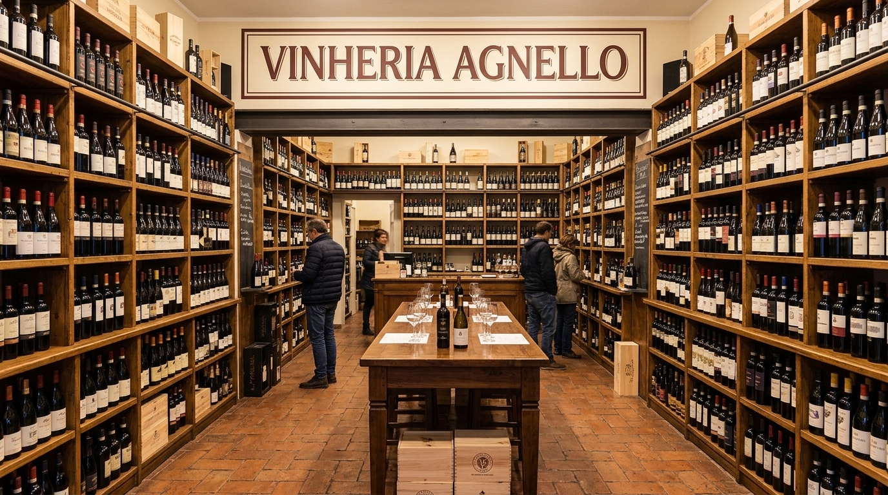

Nossa história
A Vinheria Agnello começou como uma pequena loja física em São Paulo, guiada por uma ideia simples: vinho se escolhe com conversa, não só com prateleira. Mais de 15 anos depois, essa ideia continua sendo o que nos diferencia.
A nossa vinheria adota cuidados especiais no armazenamento de vinhos, em especial com os vinhos de maior valor e vinhos raros, buscando assim garantir para clientes mais exigentes a qualidade original de cada garrafa.

Uma trajetória de família
Do balcão da loja física até os planos para o mundo digital.
-
Início: Giulio abre a Vinheria Agnello em São Paulo, com uma loja física e uma proposta clara: vender vinho com conhecimento, não só com estoque.
-
Ao longo dos anos: a equipe cresce para 3 vendedores especialistas, todos treinados para orientar sobre uvas, regiões e harmonizações — o atendimento consultivo vira a marca registrada da loja.
-
Durante a pandemia: as restrições de mobilidade afastam parte dos clientes da loja física. Giulio, resistente ao "frio" do comércio digital, começa a repensar essa posição.
-
Hoje: Bianca, filha de Giulio, assume a frente do projeto de e-commerce, buscando levar para o mundo virtual a mesma experiência de consultoria da loja física.
Quem cuida de você?
Conhecimento de sobra para indicar o vinho certo em qualquer ocasião.
-
Giulio - Proprietário e fundador da vinheria, com gestão tradicional e olhar atento a cada detalhe do atendimento.
-
Bianca - Filha de Giulio, à frente da modernização da vinheria e da chegada ao mundo digital.
-
Equipe - 3 vendedores especialistas, profundos conhecedores do mundo dos vinhos e sempre prontos para uma recomendação.